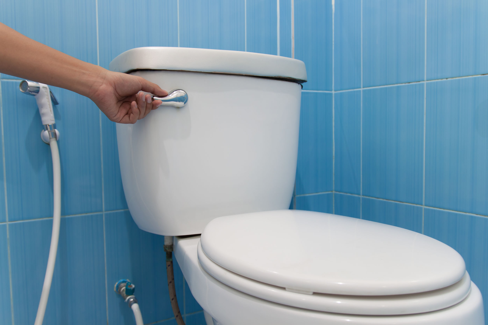

Se cada pessoa de São Paulo reduzissem em cinco minutos o tempo de banho diário, daria para economizar 26,8 bilhões de litros de água por mês.
Como economizar água de forma eficiente
10 maneiras de economizar água e reduzir o seu consumo (e sua conta)
Campanhas para a economia estão sendo feitas por todos, e, por isso, separamos as melhores dicas para reduzir o consumo de água e tentar diminuir (e a sua conta também!).
Afinal, não se trata apenas de um gasto: água doce é um recurso hídrico cada vez mais escasso, e quanto mais hábitos de redução você já tiver adotado, mais fácil será para você e o planeta. Confira:
- Tome banhos mais curtos
- Feche o chuveiro sempre que possível
- Mantenha a torneira fechada
- Cuidado com os vazamentos
- Use a descarga com consciência 
- Limpe antes de lavar
- Lave a roupa com menos frequência e mais atenção
- Não utilize a mangueira
- Atente-se à caixa d’água
- Reaproveite a água
Além de demorar menos tempo no banho, evite deixar o chuveiro aberto enquanto se ensaboa e ligue-o apenas quando for se enxaguar. Assim, o consumo cai de uma média de 180 para 48 litros a cada banho
Ao escovar os dentes, lavar o rosto ou as mãos, mantenha a torneira fechada. A economia é de 12 litros em casas a 80 litros em apartamentos.
Fique atento também se a torneira não continua pingando água mesmo quando fechada. No período de um ano, ao menos 16 mil litros de água limpa são desperdiçados apenas pelo mau fechamento das torneiras.
Por mês, 96 mil litros de água potável são desperdiçados por um buraco de dois milímetros em um cano. A quantidade de um dia é capaz de lavar todas as roupas em uma só lavagem na máquina de lavar.
Se pressionada por seis segundos, cada descarga do vaso sanitário consome entre 6 e 10 litros de água. Utilize-a somente quando houver necessidade e não jogue lixo no vaso sanitário
Muitas pessoas exageram no consumo de água na hora de lavar louça, seja por deixar a torneira aberta ou porque a louça está muito suja. Para evitar, retire o excesso de sujeira dos pratos, copos, talheres e panelas a seco, antes de abrir a torneira e mantenha-a fechada.
Com a máquina de lavar louças, tenha atenção para liga-la apenas quando estiver cheia.
Ligue a máquina de lavar roupas apenas quando ela estiver completamente cheia; o consumo de uma máquina de cinco litros é de 135 litros a cada uso. Você também pode deixar a roupa acumular e lavar tudo de uma só vez.
Seja para lavar o carro ou regar as plantas, não utilize a mangueira: se usada por 15 minutos, ela consome 180 litros de água. Para lavar o carro, prefira um pano úmido e balde e, para regar, um regador.
Não deixe a caixa transbordar e mantenha-a sempre fechada para evitar a evaporação. Junto do consumo moderado, as chances dela durar mais tempo são maiores.
A água do banho e da máquina de lavar pode ser reutilizada para fazer as pequenas limpezas, como a da calçada ou do carro, e principalmente para dar a descarga.